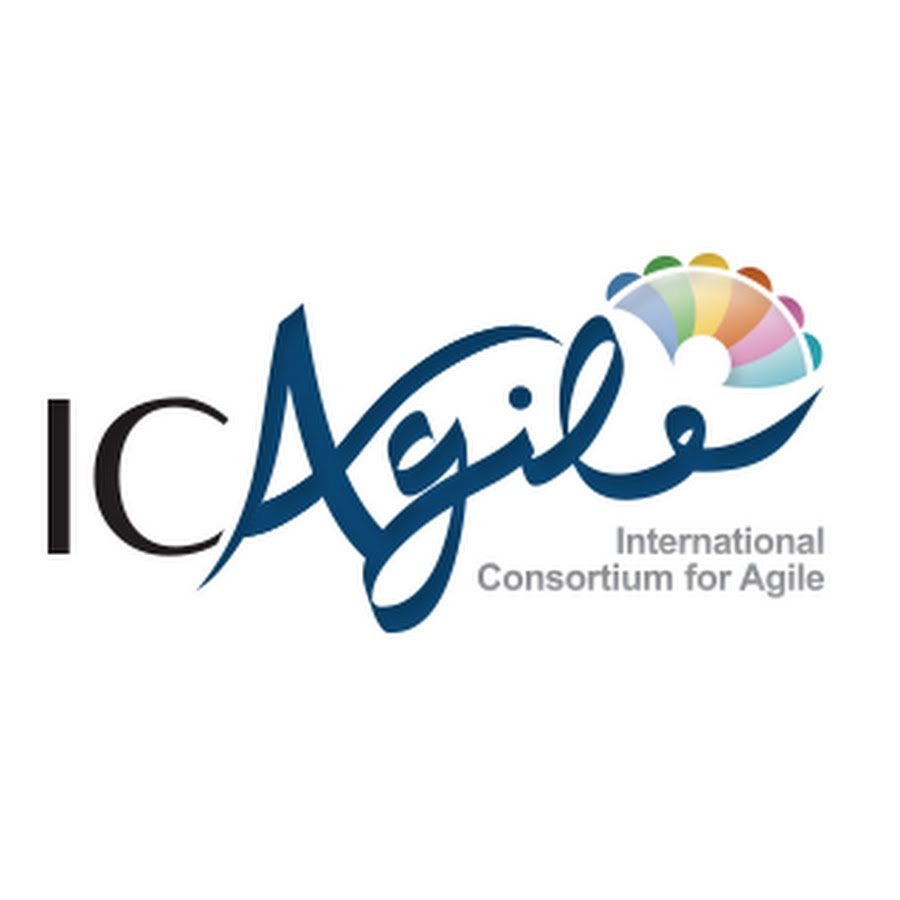

Experience

Assistant Manager - Platform Management
Kuwait International Bank | 06/2025 - Present | Kuwait
- Oversee daily support for core banking and digital applications, ensuring system stability and quick resolution of incidents.
- Coordinate with vendors and internal teams to manage upgrades, patches, and production issues.
- Lead root cause analysis and implement improvements to reduce recurring issues.
- Support new system rollouts and changes, ensuring smooth transitions and minimal business disruption.
- Prepare performance reports and ensure compliance with ITIL practices and banking standards.
Part-Time Lecturer
The Public Authority for Applied Education and Training | 09/2025 - 12/2025 | Kuwait
Higher Institute for Communications and Navigation | Course: Server Operating Systems
- Deliver theoretical and practical lectures on Windows Server 2019 administration, file systems, virtualization, and networking fundamentals.
- Design and evaluate lab exercises that simulate real-world IT infrastructure and system management scenarios.
- Guide students in troubleshooting, configuration, and server security best practices.
- Integrate accessibility and inclusive learning methods to support students with different learning needs.
- Collaborate with the academic department to align course content with current industry technologies and certifications.
Channel and Support Engineer
Kuwait International Bank | 04/2023 - 05/2025 | Kuwait
- Infrastructure Management: Maintain and optimize communication channels and IT systems, including network infrastructure and email servers.
- Communication Efficiency: Ensure smooth internal and external communication within the bank through effective management of digital platforms.
- Technical Support: Provide timely and efficient technical support to bank employees and customers, resolving IT-related issues promptly.
UX/UI Designer
Kuwait International Bank | 04/2021 - 03/2023 | Kuwait
- Led UX/UI design for KIB's new digital banking apps, from concept to final design.
- Created user-centric interfaces, collaborated with cross-functional teams, and ensured consistent, modern user experiences across mobile and web platforms.
Previous Experience:
-
 UX/UI Designer at Warba Bank (09/2020 - 04/2021, Kuwait)
UX/UI Designer at Warba Bank (09/2020 - 04/2021, Kuwait) -
Frontend Software Developer at Warba Bank (05/2019 - 09/2020, Kuwait)
-
 Web Developer at Adailiya Cooperative Society (11/2018 - 05/2019, Kuwait)
Web Developer at Adailiya Cooperative Society (11/2018 - 05/2019, Kuwait)
Technical Skills
Backend & Server Technologies
Security & Maintenance
Technical Support & Infrastructure
Project & Process Management
Web & Software Development
Education

Master's degree in Computing Information System
Kuwait University
10/2021 - 12/2025 | Kuwait City, Kuwait

Bachelor's degree in Software Engineering
Rochester Institute of Technology
08/2013 - 05/2018 | New York, United States
Certifications
-
Leadership Across Boundaries: Creating Connections, Inspiring Change
GUST Executive Education -
Google IT Support Professional Certificate
Google -
Digital Transformation with Google Cloud
Google -

Agile Expert Certificate of Proficiency
ICAgile -

Mobile User Experience (UX) Design
IxDF - Interaction Design Foundation -
Human-Computer Interaction HCI
IxDF - Interaction Design Foundation
Volunteering
Covid-19 Volunteer
MINISTRY OF INTERIOR (MOI)
03/2020 - 05/2020
Worked in finding the strategy to produce curfew permits as fast as possible and keep producing them.